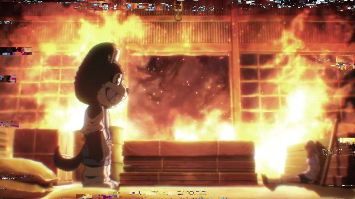

Um... you ever get that feeling that Japanese anime is starting to run out of ideas? This manifests in different ways, like how a lot of anime will follow a recent genre trend. More recently (maybe after the mid-2010's), viewers started to notice that ideas were just getting too literal, taking an absurd left-field idea and running with it without blinking. 2020's "Gleipnir" is based off a hit manga (the volumes were heavily advertised in the years leading up to it), and the first few episodes definitely give off a "shrug, why not" kinda vibe, while leaving the viewer in a constant state of "whut?". The series starts off with the main character, an average high school boy (Shuichi), with a special secret - he can transform into a super-powered monster. In this case, it's a dog-mascot costume. Not a dog, but a costume, the kind you'd see at a sports event, except it looks like it was frakenstein'ed out of spare parts. He doesn't know why or how he got this power (strength and super-sense of smell), and naturally he's freaked out about it. One night, he sees an abandoned building on fire, and saves an unconcious girl from it, and her scent brings him halfway to raping her before he stops himself and runs off (...). Turns out the girl, Claire, was trying to commit suicide, and was concious enough to see the boy's monster form, and... blackmails him. Because Claire's sister also has a monster form and disappeared after killing their parents, and she wants to track her down for revenge. Maybe they can work together and discover the mystery behind the transformations at the same time? Other monster-people (none of whom are a costume, that's just our main character) might get in their way, so Claire unzips the mascot suit and GETS INSIDE to control him, since she's unafraid to murder anything in front of her to get what she wants. Of course, she has to get undressed first, since the suit is sweaty and sticky like human muscle tissue.... There's so much to unpack here. The main hook and image of the series, a living, sweaty suit that a hot naked girl wears, is a new fetish that I bet even furry-lovers weren't predicting. Curiously, the show never goes as far as showing explicit nudity, but just the idea of it is enough for the anime to take full advantage of, explicitly comparing the merging to sex (the English dub in particular adds some extra slang, like Claire calling the transformation "doggy-style"). True, anime is no stranger to putting bizarre ideas into the plot for no other reason than fanservice (see "Qwaser of Stigmata"). But the show seems too blatant and distracting in its commitment to take the fetish seriously... I'll bet five bucks the original author spent a lot of time as the team mascot in high school to fuel this "imagination." He probably wrote this in high school too. More importantly, Claire (the second half of the hero pair) is a psycopath, for better or for worse. She has a death wish, and carries that over Shuichi's head as a threat should he ever abandon her. But she's also selfish and cruel, not flinching to kill enemies if it brings her closer to her goals, and even devising sadistic plans to do so effectively. Even among allies, she's manipulative and calculating. Shuichi recognizes this quickly: they're both complete opposites, with him the pacifist looking for cooperation, and her looking for the quickest path to the answers. He regrets the teamup, but is trapped, and one of the major themes is how her influence effects him by the end. This is all covered in the first few episodes, and is probably enough for viewers to decide "nope" or "I'm intrigued, tell me more." For me, I expected to write off the show as entertaining trash. But the series is surprisingly dense with plot. It isn't necessarily good plot: it revolves around an alien disguised as a human that comes out of an abandoned vending machine, offering drinks of power in exchange for his missing coins, and offering a wish to anyone that collects 100 for him (even "Super Mario" video games had a more belivable story than that). Also, some stuff about Shuichi's mysterious past and how it connects to Claire's sister. Again, it sounds like a bunch of random ideas thrown at the wall, but a lot of it sticks well enough to be intrigued, compelled, and outright invested, the longer the show goes. The final few episodes offer some satisfyingly surprsing twists as answers, while also leaving a lot out at a cliffhanger, presumably for a Season 2 that may never come, or for you to read the manga. By the end, I was stunned. The show was bad from the start, with a unlikable main girl, a weak main boy, and a central concept I didn't buy. When it finished, the boy had developed to be the brave (and ruthless when necessary) main character he claims not to be in a wild story, and the girl a little more sympathetic while no less determined, with a web of character intrigue that I wanted to unfurl. It's stupidly smart. Or smartly stupid. Whatever "Gleipnir" is, it's entertaining. Those mixed feelings extend to the production values. I like how the anime looks, with angular designs and distinct faces that stand out from the norm. Animation is a bit below average however, especially in the first few episodes, enough so to be distracting - "why were so few frames used?" I kept thinking. Even the action scenes, while well-choreographed, struggle with their animation to keep up, although this gets better towards the second half of the series. The music during the show (not the opening and ending themes) is impressively on-point, right at home with the action, horror, and violence, and starting up at just the right moments. One caveat to that: the show likes to put a static buzz in the background (this is noticable in the opening theme), which is apporpriately disorienting but can hurt after a while. The English dub is servicable, although I'm not sold with dub-vetran Brittney Karbowski as the sadistic Claire, and I can totally see the Japanese dub being preferred for this show. The ridiculousness mixed with extreme teenage-level edginess reminds me a lot of "Future Diary," another cult-classic-of-sorts in anime fandom. If you've liked "Diary," you'll be right at home with "Gleipnir," complete with over-the-top violence and blood, chaotic action, fanservice, and intrigue. Long debates can be had as to whether it's truly "good," but it's entertaining if nothing else, and sometimes that's enough.
- "Ani" More reviews can be found at : https://2danicritic.github.io/ Previous review: review_Girls_und_Panzer_-_OVA Next review: review_Go_West_-_A_Lucky_Luke_Adventure